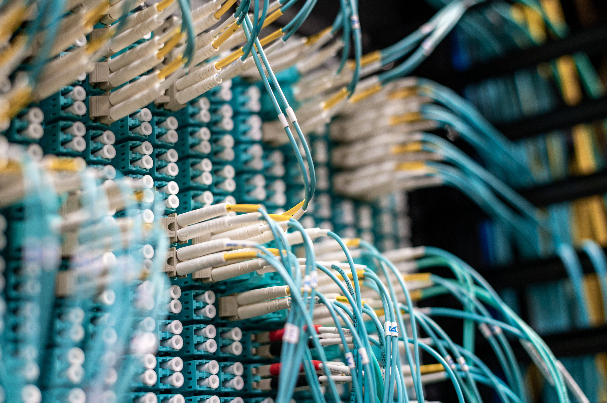
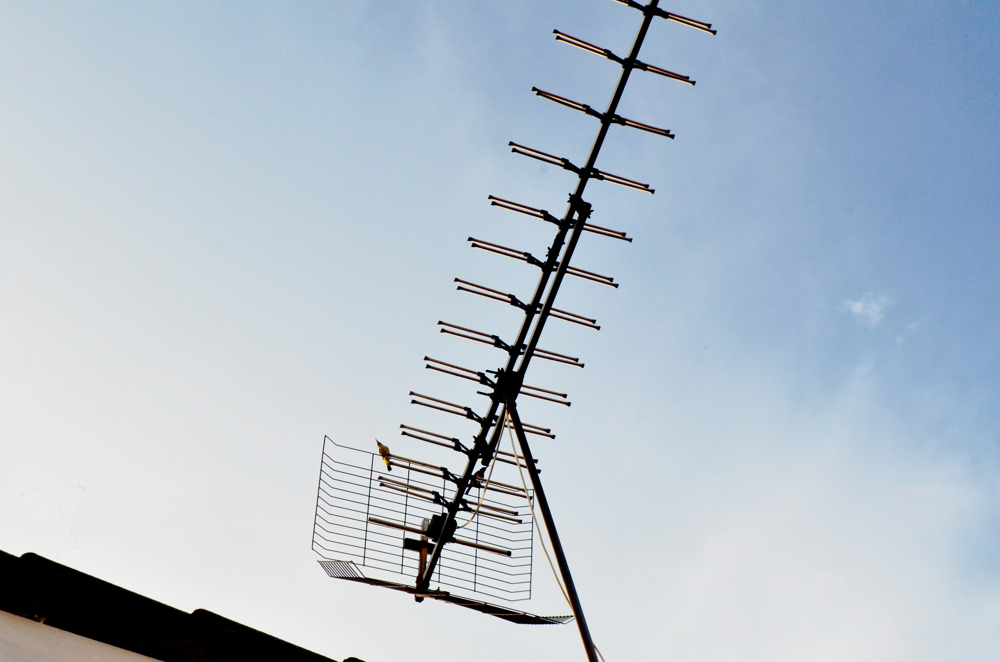

What is the Digital Divide?
A lot of people think internet is just a nice-to-have, but really it should be treated like electricity or water - something everyone needs. If a neighbourhood doesn't have good internet, people there can't do online banking, can't join online classes properly, and can't reach a doctor online either. Small businesses in that area also lose out because they can't sell things online. This problem isn't random - it usually happens more in rural areas and poor neighbourhoods, so the people who already have less end up with the worst internet too.

{kind=link}
Fixing this isn't just about running more cables. It also means local councils add universities actually checking which areas have bad or no internet, instead of just leaving it to internet companies to decide where it's "Worth" building. Students can even help with this by doing simple surveys in their own area to see where the gaps are.
Old Thinking VS New Thinking
| Old Way of Thinking | New way of Thinking |
|---|---|
| Internet is a private luxury | Internet is planned like water or electricity |
| Bad coverage is just "bad luck | Bad coverage gets reported and fixed with public money |
| Success= The national average is good | Success= Even the worst-connected street has decent internet |
Sharing Internet as a Community
Sometimes internet companies just don't bother connecting small or far away areas because it's not profitable enough for them. In these cases, people can set up their own small community networks - basically sharing one good connection across a street or a block of flats using cheap routers. It's not as good as a proper nationwide network, but it proves that people don't always have to wait around for a big company to fix the problem for them.

Why this Actually Works
One shared connection that's used fairly is usually better than everyone trying to get their own bad connection. It works best when everyone agrees on fair usage and someone (even a student who understands basic networking) looks after the equipment.
The Problem of Expensive Devices
Even if the internet connection is there, people still need a phone, tablet, or laptop to actually use it. For a lot of families, that's the expensive part, not the internet bill itself. For students, not having a working laptop can mean missing coursework deadlines through no fault of their own. For small shop owners, it can mean they can't sell online at all.

One realistic fix is device donation - collecting old laptops and phones that offices or universities aren't using anymore, wiping the data properly, and giving them to someone who needs one. A single old laptop given to the right person can make a real difference.
Simple Things That Actually Help
- Donation drives: Collect unused laptops or phones from your uni, workplace or local group.
- Wiping data safety: Learn the correct way to wipe a device before passing it on, so the old owner's data stays private.
- Basic repairs: Join or support a repair club that fixes up old devices instead of throwing them away.
Why Digital skills Matter Too
Having internet and and a device is only half the story. If someone doesn't know how to use them safety, they are still stuck. A lot of people who just got internet for the first time also run into scams, confusing apps, and account setups they don't understand - usually with no one around to help. Teaching basic digital skills isn't exciting work, but it's what actually makes the connection useful.
{kind=link}
Because this depends on people teaching people, it can spread fast - one confident volunteer can help a lot of people over just a few weekends. Universities and student groups are in a good position to run these sessions since a lot of students already know this stuff from their own courses.
What a Beginner Session Could Cover
- Account basics: Setting up email and picking a strong password
- Spotting scams: Recognising fake messages before money or details get shared.
- Real tasks: Practising things they will actually use, like checking a bus time or messaging family.
- Who to ask later: Giving the someone to contact if something goes wrong after the session.
What Students Can Actually Do
Students usually don't have the money or authority to fix internet infrastructure themselves. What students can do instead is collect evidence - showing exactly where the connection is weakest and what problem that causes - and take that evidence to people who can actually do something, like local councils or university outreach teams.
{kind=link}
This doesn't need any special equipment. Just asking neighbours or classmates where their internet is worst, and writing it down properly, can turn into useful evidence once it's put together. This connects back to everything else on this page - better information means better-targeted information means better-targetted community networks, device donations, and skills sessions.
A Realistic First Step
Instead of trying to fix whole city, start with just one street or one student building. A small, well-documented example is for a council to take seriously than a big vegue statistic, and it's something one person or a small group can actually finish in a term.